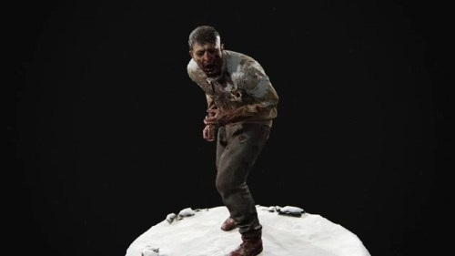
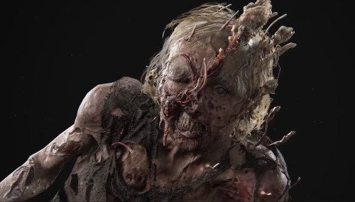
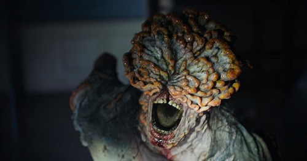
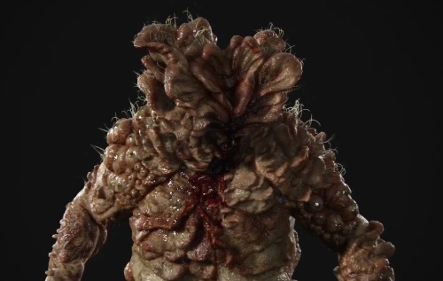

Corredores
Los corredores son la primera y más débil etapa de los infectados que recientemente
ingresaron a su transformación. Las personas que han sido infectadas entrarán en esta
etapa dentro de 1-2 días con mayor irritabilidad y hostilidad hacia otros siendo un
síntoma clave. Dado que los ojos son los primeros en ser atacados por el hongo,
los corredores ven muy mal, pero mantienen algunas características humanas.

Acechadores
Los acechadores son la segunda etapa de la infección. Tienen la visión y la velocidad
de los Corredores, pero con la ferocidad de los Chasqueadores. Los rasgos físicos más
notables que definen a los acechadores son los distintos ruidos de graznidos que
producen, a ellos les comienzan a crecer hongos alrededor de la cabeza y la cara
dejandolos con solo un ojo, el desarrollo de la pseudoecolocación y su discreción,
le permite detectar a una víctima a distancia. Ellos atacarán y se refugiarán,
eventualmente acercándose a la víctima, de ahí el nombre "Acechador".
La etapa 2 puede tener lugar entre una semana y un mes después del inicio de la
Etapa 1 y dura un año y luego pasa a la Etapa 3.

Chasqueadores
Los Chasqueadores son la tercera etapa de los Infectados y tardan aproximadamente un
año en alcanzar esta etapa de infección. Han tenido una exposición prolongada al hongo
y ahora poseen una fuerza que supera con creces al humano promedio. Esto los hace más
mortales, pero a costa de ser completamente ciegos debido a una infección fúngica que
les cubre la cara. Sin embargo, los Chasqueadores son capaces de maniobrar a través de
las áreas utilizando la ecolocalización, que produce ruidos de chasquidos/chillidos
notables para localizar las fuentes de sonido, de ahí su nombre.

Gordinflones o Hinchados
Los Gordinflónes son una variación de la cuarta etapa que se desarrolla en climas secos,
tardando años en llegar a esta etapa. Están cubiertos de hongos gruesos que efectivamente
actúan como armadura. Debido a esta cubierta protectora, pueden soportar múltiples impactos de armas
haciendolos extremadamente difíciles de eliminar. Los Gordinflónes son extremadamente
agresivos, pero se mueven lentamente, haciéndolos más predecibles que otros infectados.
Debido a que el hongo ha deformado completamente su cara y los ha cegado,
su ecolocalización es mucho menos refinada que los Chasqueadores.
